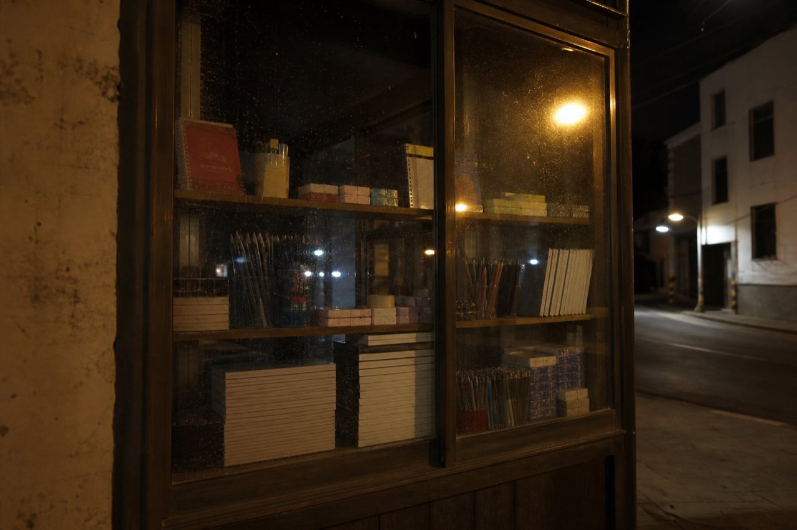

That new StationeryShop at the lane mouth. Glass still not wiped clean. The sign only has Puye painted. The light-box wire still hangs. Shop owner Shao Pu has not shown his face in the funeral shed these days. He is in the shop nailing shelf boards.
This shop sells notebooks, pens, staplers. The lion head and storefront lamps for opening day go through Mai's, not pasted here. If the goods do not arrive tonight, ribbon-cutting is only the reflection on the glass.
